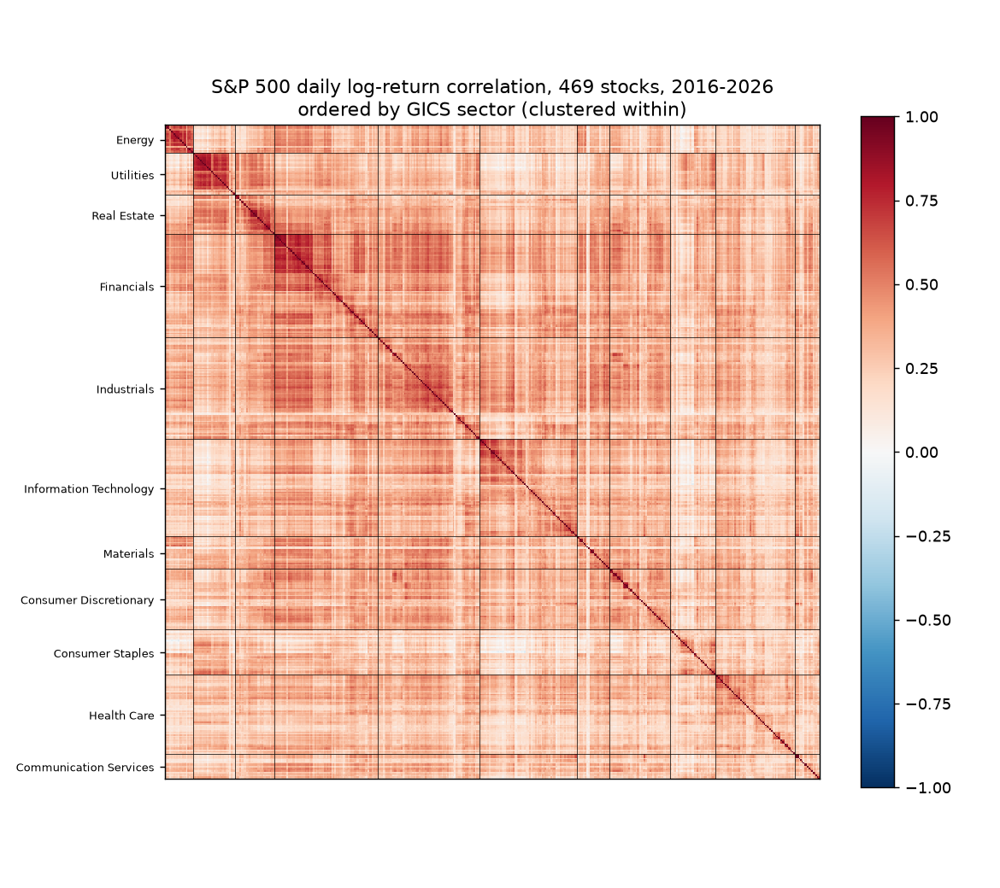
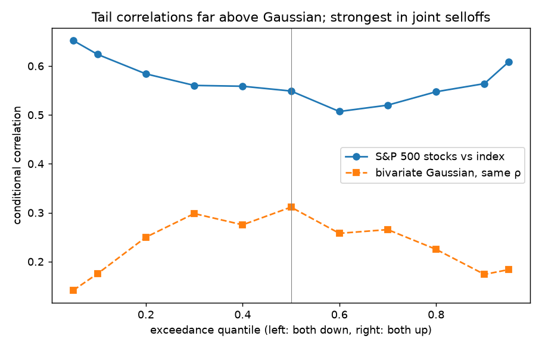

Momentum, Heston and Machine Learning: Can a Better Equation Predict Option Prices?
The Heston stochastic-volatility model is the textbook equation for option prices. I wanted to know whether it can be pushed further. If you add momentum (a trend term in the variance), jumps, a second variance factor or machine learning, do you get better forecasts of option prices than plain Heston and the market itself?
One fact shaped the whole project. Momentum in the drift of the price can't change option prices at all, because the risk-neutral measure replaces the drift with the interest rate. Only momentum in the variance can. So I asked three separate questions. Does trend predict returns? Does it predict volatility? And is it already in option prices?
How I set it up
- Data: 48 assets (indices, sectors, countries, bonds, commodities, FX and single stocks) going back as far as 1985. I added 18 Cboe implied-vol indices paired with their underlyings (VIX/SPX, VXN/NDX, GVZ/gold, OVX/oil, VXAPL and more), plus SPY option chains and a full year of SPX option prices from OptionMetrics (WRDS).
- No look-ahead: every model is refit once a year on past data only. An expanding window and a 21-day embargo keep overlapping targets from leaking future information.
- Honest statistics: targets overlap from day to day, so every comparison uses Newey–West or Diebold–Mariano t-stats. When I pool many markets, I average across markets on each date first.
- Rules fixed in advance: I wrote down the design of the hedging backtest and the OptionMetrics tests before running them. Anything I came up with after seeing results is labelled post-hoc.
1. Forecasting implied volatility: plain Heston is hard to beat
The target was implied volatility 21 days ahead, averaged over the 18 markets. I scored each model by its out-of-sample R² against a random walk, the forecast that tomorrow's implied vol equals today's.
| Model | RMSE (vol pts) | OOS R² vs random walk |
|---|---|---|
| Random walk | 7.40 | 0 |
| Heston (mean reversion) | 6.96 | +10.6% |
| + second factor (double Heston) | 6.93 | +10.0% |
| + jumps (Bates proxy) | 6.99 | +9.7% |
| + return trend (momentum) | 7.00 | +9.5% |
| All modifications together | 7.27 | −0.8% |
| Elastic net (all features) | 7.06 | +7.5% |
| Gradient boosting (all features) | 7.72 | −11.1% |
Heston's mean reversion beats the random walk in 16 of 18 markets. No single extension did significantly better. Stacking all of them overfit, and regularisation fixed most of that but still didn't beat Heston. For the VIX alone, where the option term structure (VIX9D/3M/6M) is directly observable, a genuine second variance factor does show up: R² rises from 17.3% to 19.4%.
2. Pricing the smile: jumps matter most
I calibrated Heston, Bates (Heston plus jumps) and double Heston to option prices using Fourier pricing. I started with a single SPY chain of 219 options across 8 expiries. There, Bates cut the leave-one-expiry-out smile error by 32%. It does this with a rare crash (about one every 10–30 years, average size around −41%), which produces the steep short-dated skew. Plain Heston can only match that skew with an implausibly large vol-of-vol.
New: a full year of OptionMetrics data. One day is an anecdote, so I recalibrated every trading day of 2024 on SPX options (252 days, about 220 options a day). The result held up. The average in-sample error was 1.15 vol points for Heston, 0.47 for Bates and 0.46 for double Heston. The fitted jump parameters were stable from day to day, while double Heston kept hitting its parameter bounds, a sign it is too flexible.
The year of data also allowed an out-of-sample test: calibrate today, then predict tomorrow's smile. Bates (0.57 vol points) beat Heston (0.82). But a simple sticky-strike rule, which just keeps each strike's implied vol unchanged, beat every model (0.34). Structural models explain the shape of the smile well, but over a single day they don't beat simple practitioner rules.
3. Momentum: real in volatility, already priced, absent in returns
- Returns (48 assets): no predictability. Pooled out-of-sample R² was negative. Only 2–6 of 48 assets passed a 5% test, about what chance alone would give. A diversified trend-following portfolio (Sharpe 0.55–0.71) did not beat buy-and-hold (0.75).
- Realised volatility (18 markets): a downside-trend term significantly improved forecasts built only on past prices (pooled t = −2.84, better in 13 of 18 markets). Once implied vol was in the model, the gain disappeared (t = −0.57): the option market already prices it. Gold and silver showed the opposite sign: their volatility rises after rallies.
- Implied vol is the best single forecast of realised vol, beating the best model built on past prices in 12 of 18 markets.
4. Machine learning: the setup matters more than the model
- Gradient boosting on one market at a time did significantly worse than linear models. Trees can't extrapolate past the largest values they've seen, so they break down in volatility spikes. A single pooled, scale-free model trained on all 18 markets, with features measured relative to implied vol, matched the option market's own forecast.
- Google's TimesFM foundation model on 20 global indices lost to the classic HAR model when used on its own. A small detail drove part of that. Its default output is the median, which runs too low for volatility because volatility spikes upward. Averaging TimesFM with HAR beat HAR in all 20 markets (pooled Diebold–Mariano t = −7.75). Fine-tuning on A100 GPUs on MSU's HPC cluster didn't help.
5. Testing my tests with Monte Carlo
I simulated Heston markets with a known amount of momentum and ran them through the same pipeline: 5,000 paths per setting, run as SLURM job arrays on the HPC cluster.
- The test without implied vol came out positive 81% of the time even with zero momentum. It was picking up the leverage effect: falling prices raise variance. So my real-data t = −2.84 is consistent with leverage alone.
- The test that includes implied vol is correctly sized (1.7% false positives), but it catches realistic, unpriced momentum only about 10% of the time. So "already priced by options" fits the data, but the data don't prove it.
- Momentum in the drift was undetectable even with 30 years of data. The "no return predictability" result tells me little either way.
6. The profit that wasn't: delta-hedged option selling
I sold a one-month at-the-money straddle every day in each of the 18 markets and delta-hedged it daily, with bid/ask and hedging costs included. I fixed the design before the first run.
- Priced at the Cboe vol index, it looked great: +2.7 vol points per trade (t = 14), Sharpe 1.97, profitable in 16 of 18 markets. Hedging made the P&L 2.3× less volatile and cut the worst loss from −112 to −41 vol points.
- But a Cboe index prices out-of-the-money options and sits above at-the-money vol. On the one day I checked, the VIX was 19.45 while at-the-money vol was 15.4.
- New: the OptionMetrics rerun settled it. I priced the same trades at the actual 30-day at-the-money implied vol and compared on the same dates. The profit fell from +2.33 (t = 11) to +0.10 (t = 0.4), with a Sharpe ratio of 0.07. Before bid/ask it still earned +1.1 (t = 4.6). The variance risk premium is real, but the option spread eats it. Most of the apparent edge came from using the wrong price.
- Forecast-based filters (skipping trades when a model predicts high vol) lowered P&L in every version. The skipped days come right after vol spikes, which is when selling pays the most.
7. How stocks move together
Across 469 S&P 500 stocks, random matrix theory (Marchenko–Pastur) separates about 21 real factors from noise. Correlations jump in crashes far more than a Gaussian model would predict. A downside-trend signal also improves next-month correlation forecasts (R² from 26% to 31%).


What's next: pre-registered tests
Before looking at any of the results, I wrote down three tests on the OptionMetrics data (pre-registration):
- Does the option market price momentum correctly? After a downtrend, compare the forward variance implied by options (30 to 91 days) with the variance that is actually realised, for SPX from 1996 to 2025, then replicate on the other 17 markets.
- Do jumps matter more in crises? Test whether Bates's advantage over Heston grows with the VIX, including 2008, 2020 and 2022.
- Does the option-implied jump premium predict S&P 500 returns? Use the same walk-forward setup and Clark–West test as everything else.
What I took away
Momentum is real in volatility but not in returns, and the option market already prices it. What adds predictive value is the structure of the known equation. Heston's mean reversion forecasts implied vol, and jumps price the smile. Extra state variables and naive machine learning mostly overfit. The hardest part wasn't building models. It was not fooling myself: preventing leaks, using the right t-stats, checking what price I was really trading at, and asking whether a test could have said "yes" at all.
Tools: Python (NumPy, pandas, SciPy, scikit-learn, PyTorch), Heston/Bates/double-Heston models, Fourier option pricing, HAR, GARCH, TimesFM, Monte Carlo, OptionMetrics (WRDS), HPC (SLURM, A100)